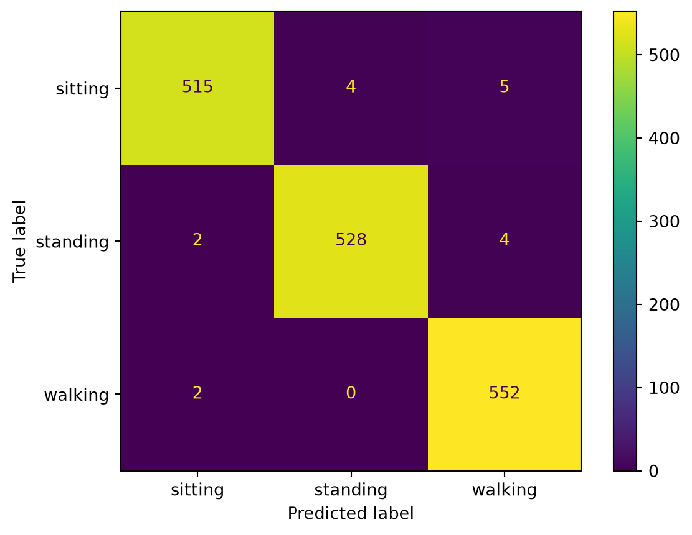

from pathlib import Path
import sys
import pandas as pd
import matplotlib.pyplot as plt
from sklearn.ensemble import RandomForestClassifier
from sklearn.metrics import (
accuracy_score,
classification_report,
ConfusionMatrixDisplay,
)
from sklearn.model_selection import train_test_split
current_path = Path.cwd().resolve()
for parent in [current_path] + list(current_path.parents):
if (parent / "app").exists():
PROJECT_ROOT = parent
break
else:
raise RuntimeError("Could not find project root containing app/ directory.")
sys.path.insert(0, str(PROJECT_ROOT))
DATA_DIR = PROJECT_ROOT / "data"
features_df = pd.read_csv(DATA_DIR / "features_df.csv")7 Machine Learning
7.1 Learning Objectives
After completing this chapter, you should be able to
- load the feature table created in the previous chapter,
- define feature columns and target labels,
- train a Random Forest classifier,
- create predictions on unseen windows,
- evaluate the model with accuracy and a classification report,
- understand why a simple baseline model is valuable.
7.2 Setup
7.3 Why Random Forest?
We use a Random Forest as our first model because it is a strong baseline for tabular feature data.
A Random Forest is an ensemble of decision trees.
It is useful because it is
- easy to train,
- robust,
- fast enough for this project,
- suitable for tabular data,
- relatively easy to explain.
TipEngineering Insight
A simple baseline model is often the best starting point.
Before using deep learning, always ask whether a simpler model already solves the problem well enough.
7.4 Step 1 — Inspect the Feature Table
features_df.head()| mean_x | std_x | min_x | max_x | energy_x | mean_y | std_y | min_y | max_y | energy_y | ... | min_z | max_z | energy_z | mean_magnitude | std_magnitude | min_magnitude | max_magnitude | energy_magnitude | activity | subject_id | |
|---|---|---|---|---|---|---|---|---|---|---|---|---|---|---|---|---|---|---|---|---|---|
| 0 | -1.000110 | 1.892580 | -6.492264 | 3.651398 | 454.626037 | 9.619472 | 3.986348 | 2.684174 | 18.676529 | 10826.630357 | ... | -4.935730 | 6.472199 | 441.051585 | 10.036322 | 4.081904 | 2.954282 | 19.337960 | 11722.307978 | walking | 1600 |
| 1 | -1.344509 | 2.100092 | -8.082993 | 2.628891 | 617.398405 | 9.521806 | 4.066769 | 1.647736 | 18.787323 | 10703.800290 | ... | -9.686493 | 8.261765 | 613.495476 | 10.067197 | 4.263836 | 2.317188 | 21.165828 | 11934.694171 | walking | 1600 |
| 2 | -1.513662 | 2.453901 | -8.111908 | 3.641586 | 825.258859 | 9.580595 | 4.107310 | 1.222855 | 18.672226 | 10848.909078 | ... | -7.444763 | 8.010345 | 617.453834 | 10.205469 | 4.353638 | 2.008688 | 20.879614 | 12291.621772 | walking | 1600 |
| 3 | -1.496280 | 2.116861 | -8.181854 | 3.257019 | 667.514539 | 9.551068 | 4.078216 | 1.483902 | 18.526184 | 10768.842824 | ... | -6.522125 | 4.545944 | 418.363595 | 10.028709 | 4.260721 | 2.306182 | 18.917277 | 11854.720957 | walking | 1600 |
| 4 | -1.644037 | 2.244849 | -8.546417 | 5.301727 | 769.181090 | 9.362707 | 3.838999 | 1.363663 | 18.914047 | 10225.081870 | ... | -6.078949 | 6.125534 | 548.564670 | 9.976820 | 4.006477 | 1.887441 | 18.943003 | 11542.827630 | walking | 1600 |
5 rows × 22 columns
features_df.shape(8060, 22)features_df["activity"].value_counts()activity
walking 2772
standing 2670
sitting 2618
Name: count, dtype: int647.5 Step 2 — Define Features and Target
The model should learn from numerical features.
It should not use metadata such as subject_id as input.
feature_columns = [
column
for column in features_df.columns
if column not in ["activity", "subject_id"]
]
X = features_df[feature_columns]
y = features_df["activity"]
X.shape, y.shape((8060, 20), (8060,))7.6 Step 3 — Random Train/Test Split
We first use a random train/test split.
This is a common first evaluation strategy.
X_train, X_test, y_train, y_test = train_test_split(
X,
y,
test_size=0.2,
random_state=42,
stratify=y,
)X_train.shape, X_test.shape((6448, 20), (1612, 20))
WarningCommon Pitfall
A random split may place windows from the same participant in both training and test sets.
This can make the evaluation look better than it really is.
We will address this in the next chapter.
7.7 Step 4 — Train the Random Forest
rf = RandomForestClassifier(
n_estimators=200,
random_state=42,
)
rf.fit(X_train, y_train)RandomForestClassifier(n_estimators=200, random_state=42)In a Jupyter environment, please rerun this cell to show the HTML representation or trust the notebook.
On GitHub, the HTML representation is unable to render, please try loading this page with nbviewer.org.
Parameters
Fitted attributes
7.8 Step 5 — Predict on the Test Set
y_pred = rf.predict(X_test)
y_pred[:10]array(['standing', 'sitting', 'walking', 'walking', 'walking', 'walking',
'standing', 'walking', 'walking', 'standing'], dtype=object)7.9 Step 6 — Evaluate Accuracy
random_split_accuracy = accuracy_score(y_test, y_pred)
random_split_accuracy0.9894540942928047.9.1 Discussion
Accuracy tells us the fraction of correctly classified windows.
However, accuracy alone does not tell us which classes are confused.
7.10 Step 7 — Classification Report
print(classification_report(y_test, y_pred)) precision recall f1-score support
sitting 0.99 0.98 0.99 524
standing 0.99 0.99 0.99 534
walking 0.98 1.00 0.99 554
accuracy 0.99 1612
macro avg 0.99 0.99 0.99 1612
weighted avg 0.99 0.99 0.99 1612
The classification report shows precision, recall and F1-score for each class.
7.11 Step 8 — Confusion Matrix
ConfusionMatrixDisplay.from_estimator(
rf,
X_test,
y_test,
)
plt.show()
7.11.1 Discussion
The confusion matrix helps us see which activities are confused with each other.
For this dataset, walking is usually easier to classify than sitting and standing.
7.12 Step 9 — Predict One Window
sample = X_test.iloc[[0]]
prediction = rf.predict(sample)
predictionarray(['standing'], dtype=object)pd.DataFrame(
rf.predict_proba(sample),
columns=rf.classes_,
)| sitting | standing | walking | |
|---|---|---|---|
| 0 | 0.025 | 0.975 | 0.0 |
7.12.1 Discussion
The model not only predicts a class but can also estimate class probabilities.
These probabilities will later be useful in the dashboard.
7.13 Think
The model may achieve very high accuracy with a random split.
Does that mean the system will work equally well on a completely new person?
Why or why not?
7.14 Checkpoint
Before continuing, you should be able to answer:
- Why is Random Forest a good baseline model?
- What are
Xandy? - Why should
subject_idnot be used as a feature? - What does accuracy measure?
- What additional information does the confusion matrix provide?
7.15 Mini Challenge
Change the number of trees from 200 to 50.
Does the accuracy change?
What does this tell you about the stability of the model?
7.16 Summary
In this chapter you learned how to
- load the feature table,
- define feature columns and target labels,
- train a Random Forest classifier,
- evaluate it with a random split,
- inspect predictions and probabilities.
In the next chapter we will ask a more realistic question:
Can the model generalize to people it has never seen before?